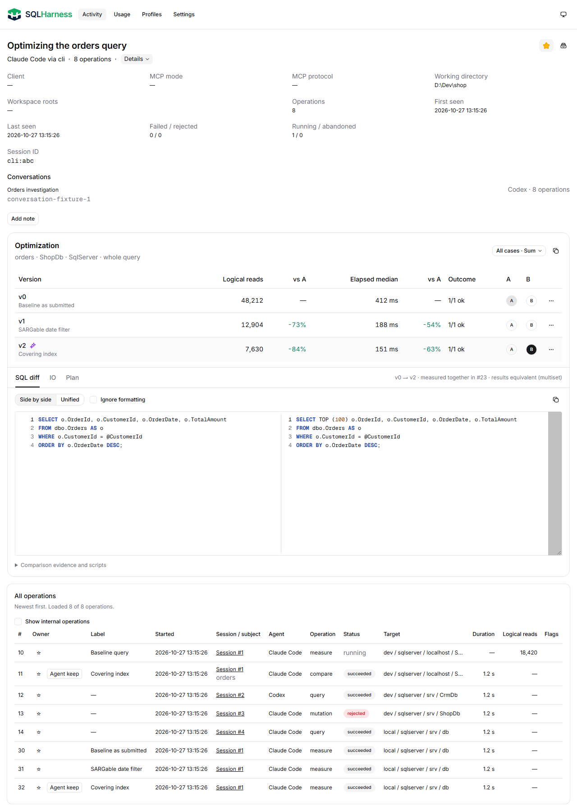
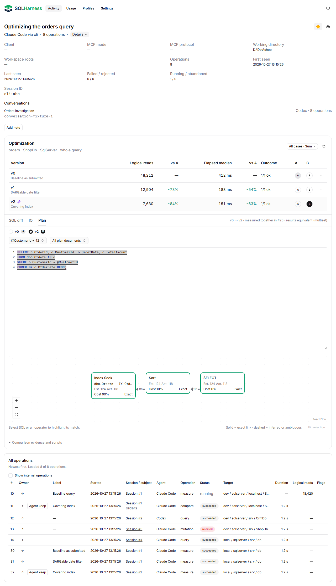
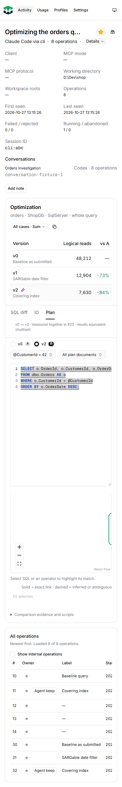

Conversations w Details, Add note przed Optimization

Rzeczywisty build aplikacji; API zastąpione wyłącznie w przeglądarce kontrolowanymi fixtures. Bez zmian w journalu lub bazie.
Audyt treści i rekomendacje · Weryfikacja · Pomiary przeciągania


